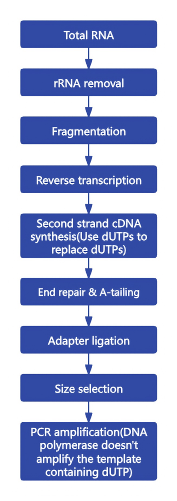
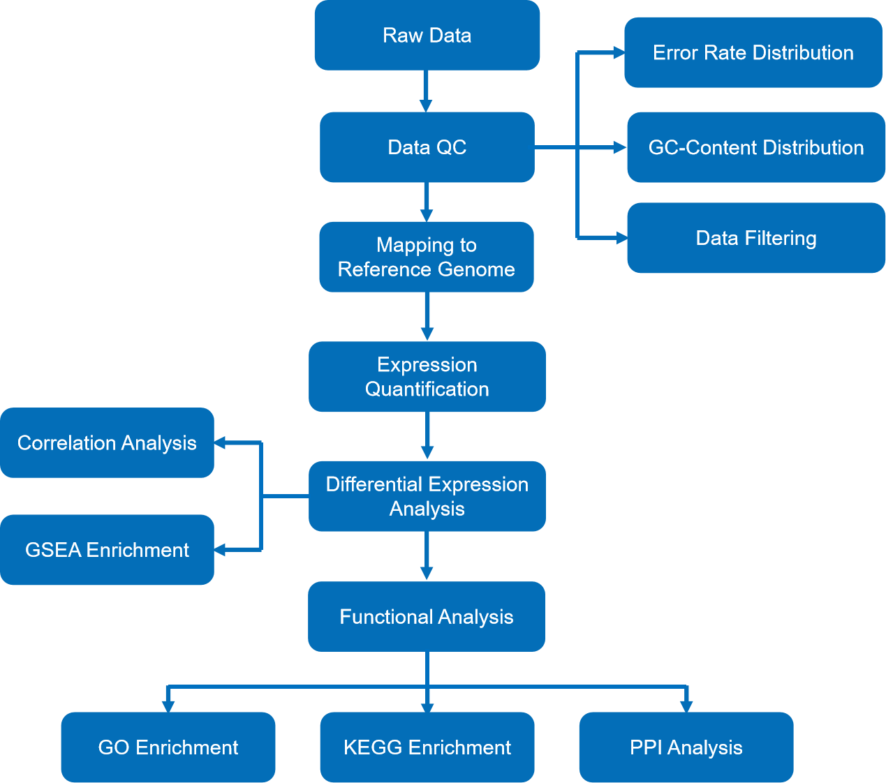
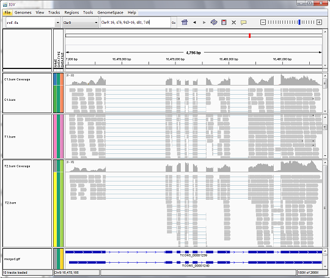
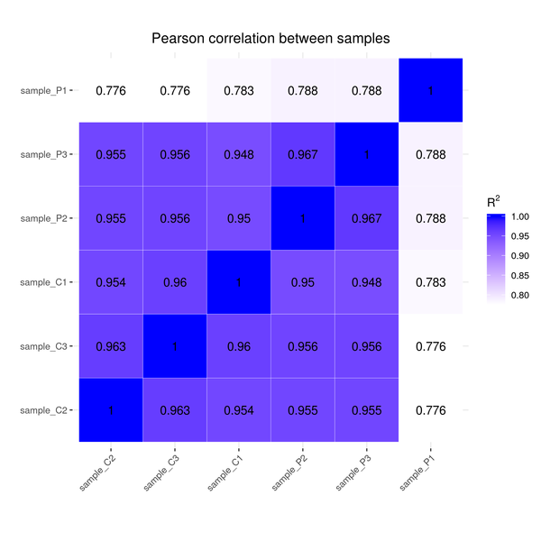

Prokaryotes RNA-seq Analysis Report
| Contract ID | H101SCXXXXXXXX |
| Contract Name | XXXXXXXXXXXXXXXXXXXXXX |
| Batch ID | X201SCXXXXXXXX-Z01-J001 |
| Reference Genome and Version | Microbacterium_aerolatum_kehu2 |
| Report Time | 2023-04-20 |
| Reminder | Partial results are presented in this report, while full results will be delivered in data release. Hyperlink of results in this report will be only valid in data release, after statement confirmation. |
1 Introduction
A transcriptome is a collection of all the transcripts in one cell or one population of cells at certain status. Transcriptomic analysis helps to study on the identification of genes that are differentially expressed in distinct cell populations. Researchers can also gain a deeper insight into gene boundary identification, variable cleavage and transcript variation.
RNA sequencing via Illumina platforms, based on mechanism of SBS (sequencing by synthesis), has a large range of benefits on high throughput and high accuracy out of low sample requirements. This technical method can be a powerful tool for researching RNA transcriptional activity.
Workflow is shown as follows:

Figure 1. Project workflow
2 Library Construction and Sequencing
2.1 Sample Quality Control
Please refer to QC report for methods of sample quality control.
2.2 Library Construction, Quality Control and Sequencing
Firstly, ribosomal RNA was removed from the total RNA and then precipitated with ethanol. After fragmentation, the first strand cDNA was synthesized using random hexamer primers. During the second strand cDNA synthesis, dUTPs were replaced with dTTPs in the reaction buffer. The directional library was ready after end repair, A-tailing, adapter ligation, size selection, amplification, and purification. The experimental procedures of RNA library preparation are shown in Figure 2.

Figure 2 Workflow of library construction
The library was checked with Qubit and real-time PCR for quantification and bioanalyzer for size distribution detection. Quantified libraries will be pooled and sequenced on Illumina platforms, according to effective library concentration and data amount required.
Method details involved in the project are available at methods
3 Bioinformatics Analysis Pipeline
The analysis workflow for data with a reference genome is as follows:

Figure 3 Bioinformatic analysis workflow
Note: PPI (Protein-protein interaction) network analysis is only available for species with known PPI network data.
Method details involved in the project are available at methods
4 Analysis Results
4.1 Data Quality Control
4.1.1 Raw Data
Original image data file from high-throughput sequencing (like Illumina) is transformed into sequenced reads (called Raw Data or Raw Reads) by CASAVA base recognition (Base Calling). Raw data are stored in FASTQ(fq) format files, which contain sequences of reads and corresponding base quality. Each read has four descriptive lines as follow:
FASTQ file:
@HWI-ST1276:71:C1162ACXX:1:1101:1208:2458 1:N:0:CGATGT
NAAGAACACGTTCGGTCACCTCAGCACACTTGTGAATGTCATGGGATCCAT
+
#55???BBBBB?BA@DEEFFCFFHHFFCFFHHHHHHHFAE0ECFFD/AEHH
- Line 1: the at sign (@) followed by sequence identifiers and optional description info (such as FASTA title line).
- Line 2: base sequences (raw read, A, G, C, and T).
- Line 3: the plus sign (+) optionally followed by the same Illumina sequence identifiers and description information as Line 1.
- Line 4: the quality values for each base, corresponding to the data in Line 2.
Illumina Sequence Identifier:
| Identifier | Meaning |
|---|---|
| HWI-ST1276 | Instrument – unique identifier of the sequencer |
| 71 | Run number – Run number on instrument |
| C1162ACXX | Flowcell ID - ID of flowcell |
| 1 | LaneNumber - positive integer |
| 1101 | TileNumber - positive integer |
| 1208 | X - x coordinate of the spot. Integer which can be negative |
| 2458 | Y - y coordinate of the spot. Integer which can be negative |
| 1 | ReadNumber - 1 for single reads, 1 or 2 for paired ends |
| N | whether it is filtered - NB: Y if the reads is filtered out, not in the delivered fastq files, N otherwise |
| 0 | control number - 0 when none of the control bits are on, otherwise it is an even number |
| CGATGT | Illumina index sequences |
The details of Sequencing identifier of Illumina are as follows:
(1) HWI-ST1276:71 HWI-ST1276, Instrument - unique identifier of the sequencer; 71, run number - Run number on instrument
(2) C1162ACXX:1:1101:1208:2458 means the coordinate of read on C1162ACXX (Flowcell ID) flowcell, line 1, 1101 tile is(x=1208, y=2458)
(3) 1:N:0:CGATGT the first number is 1 or 2, 1 means single reads or the first read of paired ends, 2 means the second of paired ends;
the second letter means whether reads is adjusted(Y means yes, N means no); the third number represent the number of Control Bits in sequence;
six bases on the fourth place is Illumina index sequence.
4.1.2 Examination of Sequencing Error Rate
The error rate for each base can be transformed by the Phred score as in equation 1. "e" represents sequencing error rate, "Qphred" represents base quality values of Illumina platforms (equation 1: Qphred = -10log10(e)).
| Phred score | ASCII code | error rate | correct rate | Q-sorce |
|---|---|---|---|---|
| 10 | + (10+33) | 1/10 | 90% | Q10 |
| 20 | 5 (20+33) | 1/100 | 99% | Q20 |
| 30 | ? (30+33) | 1/1000 | 99.9% | Q30 |
| 40 | I (40+33) | 1/10000 | 99.99% | Q40 |
Sequencing error rate and base quality are affected by the sequencing machine, reagent and the samples. The error rate distribution has two features:
(1)Error rate increases as the sequencing reads are extended and sequencing reagents are consumed.
(2)The first six bases have relatively high error rates due to the random hexamers used in priming cDNA synthesis (Jiang et al.). In general, a single base error rate should be lower than 1%.

Figure 4.1 Error Rate Distribution
The x-axis shows the base position along each sequencing read and the y-axis shows the averaged base error rate.
Result Directory: Result/1.QC/1.Error4.1.3 GC Content Distribution
GC content distribution is to detect potential AT/GC separation, which affects subsequent gene expression quantification. In view of random fragmentation and biological law of G/C-A/T content, G and C, A and T should be respectively equal, and the content should be stable throughout the whole sequencing process for non-stranded library (If the library is strand-specific, AT separation or GC separation may occur). A large variation of sequencing error in the first 6-7 bases is allowed considering the usage of random primer in library construction, which is normal that the first few bases have certain preference in existing high-throughput sequencing technology.
Figure 4.2 AT and GC content distributions
The x-axis shows each base position within a read, and the y-axis shows the percentage of each base, with each base represented by a different color.
The left side of the vertical dashed line is the GC-content of read 1, the right side is the GC-content of read 2.
Result Directory: Result/1.QC/2.GC4.1.4 Sequencing Data Filtering
The sequenced reads/raw reads often contain low quality reads or reads with adaptors, which will affect the quality of downstream analysis. To avoid this, it's necessary to filter the raw reads and get the clean reads.
Raw reads filtering is as follows:

Figure 4.3 Workflow of sequencing data filtration
(1)Remove reads with adapter contamination.
(2)Remove reads when uncertain nucleotides constitute more than 10 percent of either read (N > 10%).
(3)Remove reads when low quality nucleotides (Base Quality less than 5) constitute more than 50 percent of the read.
Sequences of adapter
| P5 Adapter | P5→P7'(5'→3') AATGATACGGCGACCACCGAGATCTACAC[i5]ACACTCTTTCCCTACACGACGCTCTTCCGATCT |
| P7 Adapter | P5→P7'(5'→3') GATCGGAAGAGCACACGTCTGAACTCCAGTCAC[i7]ATCTCGTATGCCGTCTTCTGCTTG |
Figure 4.4 Composition of Raw Reads
Results are shown as percentage of total raw reads.
- Adapter related: reads that had adapter contamination.
- Containing N: reads with more than 10 percent of uncertain nucleotides.
- Low quality: reads with more than 50 percent of low quality nucleotides.
- Clean reads: reads that passed quality control.
Result Directory: Result/1.QC/3.Filter
4.1.5 Statistics of Sequencing Quality
The data is summarized in the table below.
Table 4.1 Summary of Data Quality Control
| Sample name | Raw reads | Clean reads | Raw bases | Clean bases | Error rate(%) | Q20(%) | Q30(%) | GC content(%) |
|---|---|---|---|---|---|---|---|---|
| sample_C2 | 7676756 | 7594324 | 1.16G | 1.14G | 0.03 | 96.74 | 91.28 | 62.10 |
| sample_C3 | 7819556 | 7735054 | 1.18G | 1.17G | 0.03 | 96.91 | 91.65 | 62.62 |
| sample_P2 | 7697228 | 7604640 | 1.16G | 1.15G | 0.03 | 96.81 | 91.52 | 62.99 |
| sample_P3 | 7872342 | 7814038 | 1.19G | 1.18G | 0.03 | 96.91 | 91.73 | 62.84 |
| sample_P1 | 7535626 | 7461188 | 1.14G | 1.12G | 0.03 | 97.43 | 92.80 | 64.52 |
| sample_C1 | 7533558 | 7483140 | 1.14G | 1.13G | 0.03 | 97.53 | 93.01 | 63.56 |
- Sample name: sampleID.
- Raw reads: reads count from the raw data, four rows as an unit, with statistics of reads count for every sequencing.
- Clean reads: Clean data is reads count filtered from raw data. Statistics method is similar with raw reads.All the following analysis is based on clean data.
- Raw bases: Base number of raw data. (number of raw reads) * (sequence length), converting unit to G.
- Clean bases: Base number of raw data after filtering. (number of clean reads) * (sequence length),converting unit to G.
- Error rate(%): base error rate of whole sequencing.
- Q20(%): Phred values greater than 20 base number contain the percentage of total bases. (Base number of Phred value > 20) / (Total base number)*100.
- Q30(%): Phred values greater than 30 base number contain the percentage of total bases. (Base number of Phred value > 30) / (Total base number)*100.
- GC content(%): The percentage of G&C base numbers of total bases.(G&C base number) / (Total base number)*100.
Result Directory: Result/1.QC/4.Stat
4.1.6 Mapping to Reference Genome
Algorithm for mapping sequences:appropriate software is chosen according to the characteristics of the reference genome. In general, Bowtie2 is chosen for the genomes of bacteria and other species with a high gene density. The mismatch parameter is set to two, and other parameters are set to default. In general, the total mapped rate should be more than 70%, and the percentage of reads that can be mapped to multiple sites in the reference genome should be less than 10%, if there is no contamination and a correct reference genome is chosen.
Result Directory: Result/2.Mapping/MapStat.xls4.1.7 Overview of Mapping Status
Table 4.2 Overview of Mapping Status
| Sample_name | sample_C1 | sample_C2 | sample_C3 | sample_P1 | sample_P2 | sample_P3 |
|---|---|---|---|---|---|---|
| Total reads | 7483140 | 7594324 | 7735054 | 7461188 | 7604640 | 7814038 |
| Total mapped | 7352934 (98.26%) | 7517375 (98.99%) | 7631620 (98.66%) | 7122966 (95.47%) | 7494622 (98.55%) | 7718921 (98.78%) |
| Multiple mapped | 130624 (1.75%) | 188931 (2.49%) | 150951 (1.95%) | 141944 (1.9%) | 135200 (1.78%) | 141643 (1.81%) |
| Uniquely mapped | 7222310 (96.51%) | 7328444 (96.5%) | 7480669 (96.71%) | 6981022 (93.56%) | 7359422 (96.78%) | 7577278 (96.97%) |
| Read-1 | 3613435 (48.29%) | 3661426 (48.21%) | 3736232 (48.3%) | 3491420 (46.79%) | 3674460 (48.32%) | 3784594 (48.43%) |
| Read-2 | 3608875 (48.23%) | 3667018 (48.29%) | 3744437 (48.41%) | 3489602 (46.77%) | 3684962 (48.46%) | 3792684 (48.54%) |
| Reads map to '+' | 3608803 (48.23%) | 3662480 (48.23%) | 3738478 (48.33%) | 3488898 (46.76%) | 3678104 (48.37%) | 3786809 (48.46%) |
| Reads map to '-' | 3613507 (48.29%) | 3665964 (48.27%) | 3742191 (48.38%) | 3492124 (46.8%) | 3681318 (48.41%) | 3790469 (48.51%) |
| Reads mapped in proper pairs | 7146888 (95.51%) | 7264748 (95.66%) | 7411152 (95.81%) | 6891812 (92.37%) | 7284500 (95.79%) | 7516898 (96.2%) |
| Proper-paired reads map to different chrom | 0 (0%) | 0 (0%) | 0 (0%) | 0 (0%) | 0 (0%) | 0 (0%) |
- Total reads: total number of filtered reads (Clean data).
- Total mapped reads: total number of reads mapped to the reference genome.
- Uniquely mapped reads: number of reads uniquely mapped to the reference genome.
- Multiple mapped reads: number of reads mapped to multiple sites in the reference genome.
- Total mapping rate: the mapping rate of total reads mapped to the reference genome. In general, this number should be larger than 70% when there is no contamination and the correct reference genome is chosen.
- Uniquely mapping rate: the uniquely mapping rate of mapped to the reference genome.
- Multiple mapping rate: the multiple mapping rate of mapped to the reference genome.
4.1.8 Mapped Regions in Reference Genome
Mapped regions are classified base on the structural annotation of the reference genome. Exon-mapped reads should be abundant if the reference genome is well-annotated. Reads map to intergenic regions may due to weak annotation of the reference genome, noncoding RNA or background noise.
Figure 4.5 Classification of Reads According to Mapped Region.
Result Directory: Result/2.Mapping/1.Region
4.1.9 Distribution of Mapped Reads in Chromosomes
The distribution of mapped reads in chromosomes was estimated by statistics on the genomic locations of total mapped reads. A random selected sample of total mapped reads and their genomic location distribution is displayed in below figure:
Figure 4.6 Distribution Plot of Mapped Reads in Chromosomes.
The outermost circle represents the reference genome. The region with grey background shows the distribution of the random selected sample of reads, in which the reads mapped to positive and negative chains are in red and blue, respectively. The innermost circle shows the positive chain coverage distribution in orange and red negative chain coverage distribution in green, respectively. Strange dots were discarded if from the mean of coverages more than 3 times the standard deviation.
Result Directory: Result/2.Mapping/3.Distribution4.1.10 Visualization of Mapping Status of Reads
Files are provided in BAM format, a standard file format that contains mapping results, and the corresponding reference genome and gene annotation file for some species. The Integrative Genomics Viewer (IGV) is recommended for visualizing data from BAM files. The IGV has several features: (1) it displays the positions of single or multiple reads in the reference genome, as well as read distribution between annotated exons, introns or intergenic regions, both in adjustable scale; (2) displays the read abundance of different regions to demonstrate their expression levels, in adjustable scale; (3) provides annotation information for both genes and splicing isoforms; (4) provides other related annotation information; (5) displays annotations downloaded from remote servers and/or imported from local machines.

Figure 4.7 IGV interface
4.2 Novel Gene Prediction
The RNA-seq reads were assembled according to the reference genomes using Rockhopper(R. McClure, et al, 2013), and then compared to known gene structures, so that novel gene transcipts were predicted. The novel transcripts were aligned to sequences in NCBI NR database using Blastx (cutoff: evalue < 1e-5). Novel transcripts with NR annotations were considered as novel potential protein coding transcripts.
Table 4.3 Novel Gene Prediction
| gene_id | gene_name | gene_chr | gene_start | gene_end | gene_strand | gene_length | gene_biotype | gene_description | tf_family | GO ID | GO Description | KEGG Pathway ID | KEGG Pathway Name |
|---|---|---|---|---|---|---|---|---|---|---|---|---|---|
| Novel00008 | - | Chr1 | 181133 | 181834 | - | 702 | - | PF04069:Substrate binding domain of ABC-type glycine betaine transport system | - | GO:0006810//GO:0008150//GO:0051179//GO:0051234//GO:0005215//GO:0003674 | transport//biological_process//localization//establishment of localization//transporter activity//molecular_function | maur02010 | ABC transporters |
| Novel00009 | - | Chr1 | 185570 | 185773 | + | 204 | - | - | - | - | - | - | - |
| Novel00001 | - | Chr1 | 2337 | 2832 | - | 496 | - | PF02768:DNA polymerase III beta subunit, C-terminal domain|PF02767:DNA polymerase III beta subunit, central domain | DNA_pol3_beta_2 | GO:0006260//GO:0008152//GO:0006139//GO:0006259//GO:0006725//GO:0006807//GO:0008150//GO:0009058//GO:0009059//GO:0009987//GO:0034641//GO:0034645//GO:0043170//GO:0044237//GO:0044238//GO:0044249//GO:0044260//GO:0046483//GO:0071704//GO:0090304//GO:1901360//GO:1901576//GO:0009360//GO:0005622//GO:0005575//GO:0005623//GO:0032991//GO:0042575//GO:0044424//GO:0044464//GO:0061695//GO:1902494//GO:1990234//GO:0003677//GO:0003887//GO:0008408//GO:0003674//GO:0003676//GO:0005488//GO:0097159//GO:1901363//GO:0003824//GO:0016740//GO:0016772//GO:0016779//GO:0034061//GO:0140097//GO:0004518//GO:0004527//GO:0016787//GO:0016788 | DNA replication//metabolic process//nucleobase-containing compound metabolic process//DNA metabolic process//cellular aromatic compound metabolic process//nitrogen compound metabolic process//biological_process//biosynthetic process//macromolecule biosynthetic process//cellular process//cellular nitrogen compound metabolic process//cellular macromolecule biosynthetic process//macromolecule metabolic process//cellular metabolic process//primary metabolic process//cellular biosynthetic process//cellular macromolecule metabolic process//heterocycle metabolic process//organic substance metabolic process//nucleic acid metabolic process//organic cyclic compound metabolic process//organic substance biosynthetic process//DNA polymerase III complex//intracellular//cellular_component//cell//protein-containing complex//DNA polymerase complex//intracellular part//cell part//transferase complex, transferring phosphorus-containing groups//catalytic complex//transferase complex//DNA binding//DNA-directed DNA polymerase activity//3'-5' exonuclease activity//molecular_function//nucleic acid binding//binding//organic cyclic compound binding//heterocyclic compound binding//catalytic activity//transferase activity//transferase activity, transferring phosphorus-containing groups//nucleotidyltransferase activity//DNA polymerase activity//catalytic activity, acting on DNA//nuclease activity//exonuclease activity//hydrolase activity//hydrolase activity, acting on ester bonds | maur03440 | Homologous recombination |
| Novel00002 | - | Chr1 | 48528 | 48820 | + | 293 | - | - | - | - | - | - | - |
| Novel00003 | - | Chr1 | 69526 | 69808 | + | 283 | - | - | - | - | - | - | - |
- gene_id: Gene’s ID.
- gene_name: The gene name from Swissprot.
- gene_chr:Chromosome/scaffold ID.
- gene_start:Start coordinate.
- gene_end:End coordinate.
- gene_strand:Strand specificity.
- gene_length: Novel gene length.
- gene_biotype:The type of novel gene.
- gene_description: Description from PFAM Annotation.
- tf_family: The TF family of novel gene.
- GO ID: Gene Ontology.
- GO Description: Description of GO.
- KEGG Pathway ID: ID of KEGG metabolic pathway.
- KEGG Pathway Name: Name of KEGG metabolic pathway.
Result Directory: Result/Assemble/novel_genes.annotation.xls
4.3 Expression Quantification
4.3.1 Expression Quantification
Gene expression level is measured by transcript abundance. The greater the abundance, the higher is the gene expression level. In our RNA-seq analysis, the gene expression level is estimated by counting the reads that map to genes or exons. Read count is not only proportional to the actual gene expression level, but is also proportional to the gene length and the sequencing depth. In order for the gene expression levels estimated from different genes and experiments to be comparable, the FPKM is used. In RNA-seq, FPKM, short for the expected number of Fragments Per Kilobase of transcript sequence per Millions base pair-sequenced, is the commonest method of estimating gene expression levels, which takes into account the effects of both sequencing depth and gene length oncounting of fragments(Trapnell, Cole, et al., 2010).
FeatureCounts software was used to analyze the gene expression levels in this experiment. The result files present the number of genes with different expression levels and the expression level of single genes. In general, an FPKM value of 0.1 or 1 is set as the threshold for determining whether the gene is expressed or not.
Table 4.4 The number of genes with different expression levels
| FPKM Interval | sample_C2 | sample_C3 | sample_P2 | sample_P3 | sample_P1 | sample_C1 |
|---|---|---|---|---|---|---|
| 0~1 | 452(11.05%) | 473(11.56%) | 459(11.22%) | 472(11.53%) | 479(11.71%) | 138(3.37%) |
| 1~3 | 338(8.26%) | 295(7.21%) | 328(8.02%) | 309(7.55%) | 311(7.6%) | 127(3.1%) |
| 3~15 | 776(18.96%) | 799(19.53%) | 777(18.99%) | 787(19.23%) | 779(19.04%) | 748(18.28%) |
| 15~60 | 1132(27.66%) | 1147(28.03%) | 1131(27.64%) | 1138(27.81%) | 1131(27.64%) | 1763(43.08%) |
| >60 | 1394(34.07%) | 1378(33.68%) | 1397(34.14%) | 1386(33.87%) | 1392(34.02%) | 1316(32.16%) |
Table 4.5 Gene expression levels
| Gene_id | sample_C2 | sample_C3 | sample_C1 | sample_P2 | sample_P3 | sample_P1 | gene_name | gene_chr | gene_start | gene_end | gene_strand | gene_length | gene_biotype | gene_description | tf_family |
|---|---|---|---|---|---|---|---|---|---|---|---|---|---|---|---|
| Novel00060 | 1892472.34491118 | 1450964.99205507 | 893456.657648225 | 1225231.71305405 | 1332855.36442869 | 473913.196937418 | - | Chr1 | 1596716 | 1597080 | + | 365 | - | - | - |
| WP27_GM001485 | 286571.527505377 | 283777.087098173 | 189998.153749752 | 245847.744266812 | 218220.892949108 | 104570.106190216 | -- | Chr1 | 1556660 | 1556929 | + | 270 | protein_coding | gnl|BL_ORD_ID|404523 sp|B0RGW6|RS15_CLAMS 30S ribosomal protein S15 OS=Clavibacter michiganensis subsp. sepedonicus (strain ATCC 33113 / DSM 20744 / JCM 9667 / LMG 2889 / C-1) OX=31964 GN=rpsO PE=3 SV=1//1.24926e-50 && - | - |
| Novel00088 | 32346.8145215605 | 29626.8717364796 | 29580.1113450401 | 30933.7626238588 | 30435.5741609706 | 15619.9280619894 | - | Chr1 | 1878326 | 1878814 | + | 489 | - | - | - |
| Novel00061 | 23031.3250252269 | 17483.9718280894 | 16470.7831709851 | 19243.1400588491 | 19293.5971820378 | 9692.53673216257 | - | Chr1 | 1596712 | 1597705 | - | 994 | - | PF00126:Bacterial regulatory helix-turn-helix protein, lysR family | HTH_1 |
| WP27_GM000961 | 20461.6868692929 | 19719.1763866046 | 15607.9369255671 | 18327.9370891606 | 18196.3511665618 | 9340.66326138654 | -- | Chr1 | 990820 | 991092 | - | 273 | protein_coding | -//- && - | - |
- gene_id: Gene ID.
- Sample1: The FPKM of genes of sample1.
- Sample2: The FPKM of genes of sample2.
- gene_name: Gene symbol.
- gene_chr: Chromosome/scaffold ID.
- gene_start: Start coordinate.
- gene_end: End coordinate.
- gene_strand: Strand specificity.
- gene_length: Novel gene length.
- gene_biotype: The type of novel gene.
- gene_description: Description from PFAM Annotation.
- tf_family: The TF family of novel gene.
Result Directory: Result/Quant/1.Count/gene_fpkm.xls
4.3.2 Distributions of gene expression levels
To compare gene expression levels under different conditions, gene expression level and FPKM distribution among different samples are displayed. For biological replicates, the final FPKM would be the mean value.
Figure 4.8 Distributions of gene expression levels
Upper panel: FPKM distribution, the x-axis shows the log2(FPKM+1) and the y-axis shows gene density. Lower panel: FPKM violin Plot, the x-axis shows the sample names and the y-axis shows the log2(FPKM+1). Each violin has five statistical magnitudes (max value, upper quartile, median, lower quartile and min value). Lower panel: FPKM box Plot, the x-axis shows the sample names and the y-axis shows the log2(FPKM+1).
Result Directory: Result/Quant/3.Distribution/4.4 RNA-seq Advanced QC
4.4.1 Correlation of RNA-seq samples
Biological replicates are necessary for any biological experiment, including those involving RNA-seq technology (Hansen et al.). In RNA-seq, replicates have a two-fold purpose. First, they demonstrate whether the experiment is repeatable, and secondly, they can reveal differences in gene expression between samples. The correlation between samples is an important indicator for testing the reliability of the experiment. The closer the correlation coefficient is to 1, the greater the similarity of the samples. ENCODE suggests that the square of the Pearson correlation coefficient should be larger than 0.92, under ideal experimental conditions（ENCODE Project Consortium,2004）. In this project, the R2 should be larger that 0.8.

Figure 4.9 Correlation of RNA-seq samples
Heat map: The heat map of correlation coefficient between samples; Scatter Diagram(If the samples are more than 4 groups, then only present the scatter diagrams between biological replicates):The scatter diagrams of correlation coefficient between samples; R2:The square of Pearson coefficient
Result Directory:Result/Quant/2.Correlation/correlation.png{kind=link}
4.5 Differential Expression Analysis
4.5.1 List of differentially expressed genes
The input data for differential gene expression analysis are readcounts from the gene expression level analytsis. The differental gene expression analysis contains three steps:
1)Readcounts Normalization;
2)Model dependent p-value estimation;
3)FDR value estimation based on multiple hypothesis testing.
Different softwares and parameter sets are applied in different situations. The analysis methods are listed below:
| Type | Software | Normalzation method | p-value estimation model | FDR estimation method | Difference analysis threshold |
|---|---|---|---|---|---|
| With biological duplicates | DESeq2(Anders et al, 2014) | DESeq | Negative binomial distribution | BH | |log2(FoldChange)| > 0&padj < 0.05 |
| Without biological duplicate | edgeR(Robinson et al, 2010) | TMM | Poisson distribution | BH | |log2(FoldChange)| > 1&padj < 0.005 |
The readcount value of the ith gene in the jth sample is Kij, then
Negative binomial distribution: Kij ～ NB(μij,σij2)
Poisson distribution: Kij ～ P(μij)
Table 4.6 List of differentially expressed genes
| gene_id | sample_P2 | sample_P3 | sample_P1 | sample_C2 | sample_C3 | sample_C1 | sample_P | sample_C | log2FoldChange | pvalue | padj | gene_name | gene_chr | gene_start | gene_end | gene_strand | gene_length | gene_biotype | gene_description | tf_family |
|---|---|---|---|---|---|---|---|---|---|---|---|---|---|---|---|---|---|---|---|---|
| WP27_GM002021 | 2361.95795541387 | 2217.3070664734 | 2085.10602064405 | 768.709863369619 | 790.685747380763 | 775.99810998654 | 2221.45701417711 | 778.464573578974 | 1.51213669097689 | 9.29087643803307e-45 | 3.32706285245964e-41 | -- | Chr1 | 2069479 | 2071206 | - | 1728 | protein_coding | gnl|BL_ORD_ID|213612 sp|Q6AED3|LEU1_LEIXX 2-isopropylmalate synthase OS=Leifsonia xyli subsp. xyli (strain CTCB07) OX=281090 GN=leuA PE=3 SV=1//0 && PF08502:LeuA allosteric (dimerisation) domain|PF00682:HMGL-like | HMGL-like |
| WP27_GM002746 | 16863.9490494443 | 17590.430468935 | 14881.0724420702 | 5354.41820949069 | 5311.84207731451 | 6441.95415928525 | 16445.1506534832 | 5702.73814869681 | 1.5276764608147 | 3.56085559955316e-33 | 6.37571195099993e-30 | -- | Chr1 | 2783063 | 2784682 | - | 1620 | protein_coding | gnl|BL_ORD_ID|61350 sp|B0RAY1|CH60_CLAMS 60 kDa chaperonin OS=Clavibacter michiganensis subsp. sepedonicus (strain ATCC 33113 / DSM 20744 / JCM 9667 / LMG 2889 / C-1) OX=31964 GN=groL PE=3 SV=1//0 && PF00118:TCP-1/cpn60 chaperonin family | - |
| Novel00153 | 1965.05056125618 | 2104.23160179465 | 1840.84062943108 | 582.854024693083 | 610.144022394234 | 739.92784608013 | 1970.0409308273 | 644.308631055816 | 1.61039322736263 | 1.31182850435899e-29 | 1.56588595803651e-26 | - | Chr1 | 2783034 | 2784724 | + | 1691 | - | PF00118:TCP-1/cpn60 chaperonin family | - |
| WP27_GM000061 | 521.005054863328 | 478.000827960191 | 509.771251227068 | 1121.45665922509 | 1208.32443650623 | 1208.84127686345 | 502.925711350196 | 1179.54079086492 | -1.22988238097707 | 1.20052555825772e-25 | 1.07477050603022e-22 | -- | Chr1 | 51203 | 52846 | + | 1644 | protein_coding | gnl|BL_ORD_ID|228469 sp|Q9ZH77|MASY_STRC2 Malate synthase OS=Streptomyces clavuligerus (strain ATCC 27064 / DSM 738 / JCM 4710 / NBRC 13307 / NCIMB 12785 / NRRL 3585 / VKM Ac-602) OX=443255 GN=aceB PE=3 SV=1//0 && PF01274:Malate synthase | - |
- gene_id: id of differentially expressed gene.
- samples from group A: normalized readcounts of all samples from group A.
- samples from group B: normalized readcounts of all samples from group B.
- log2FoldChange: log2(Sample1/Sample2).
- pvalue: p-value of statistical hypothesis testing.
- padj: adjusted p-value. The lower the qvalue is, the more significant the gene differentially expressed.
- gene_name: gene name.
- gene_chr: name of chromosome in which the gene is located.
- gene_start: start position of the gene at the chromosome.
- gene_end: end position of the gene at the chromosome.
- gene_strand: chain information of the gene.
- gene_length: gene length.
- gene_biotype: gene type.
- gene_description: gene function description.
- tf_family: tf family annotation.
Result Directory: Result/Differential/1.deglist
4.5.2 Screening of differentially expressed genes
Volcano plots are used to infer the overall distribution of differentially expressed genes. For the samples with biological replicates, the threshold of differential expression genes is: padj < 0.05. For the samples without biological replicates, the threshold of differential expression genes is: |log2(FoldChange)| > 1 and qvalue < 0.005.
Figure 4.10 Volcano plot for differentially expressed genes
Horizontal axis for the fold change of genes in different samples. Vertical axis for statistically significant degree of changes in gene expression levels, the smaller the corrected pvalue, the bigger -log10(corrected pvalue), the more significant the difference. The point represents gene, blue dots indicate no significant difference in genes, red dots indicate upregulated differential expression genes, green dots indicate downregulated differential expression genes.
Result Directory: Result/Differential/1.deglist/*/*_volcano.png
4.5.3 Cluster Analysis of Gene Expression Differences
Cluster analysis is used to find genes with similar expression patterns under various experimental conditions. By clustering genes with similar expression patterns, it may be possible to discern unknown functions of previously characterized genes or the function of unknown genes. In hierarchical clustering, areas of different colors denote different groups (clusters) of genes, and genes within each cluster may have similar functions or take part in the same biological process.
Figure 4.11 Cluster analysis.
Upper panel: the overall results of FPKM cluster analysis, clustered using the log2(FPKM+1) value. Red denotes genes with high expression levels, and blue denotes genes with low expression levels. The color range from red to blue represents the log2(FPKM+1) value from large to small. Lower panel: log2(fpkm+1) line chart. Each grey line in a subline chart represents the relative expression value of a gene cluster under different experimental conditions, and the blue line represents the mean value. The x-axis shows the experimental condition and the y-axis shows the relative expression level.
Result Directory: Result/Differential/3.cluster
4.5.4 The Venn Diagram of Gene Expression
When there is only 1 compare group, the gene expression venn diagram will be presented. FPKM>1 is the expression threshold. The diagram presents the number of expressed genes between each group and the overlaps between groups.
Figure 4.12 The Venn Diagram of Gene Expression
The sum of numbers in each circle is the counts of differentially expressed genes of the certain compare, and the numbers in the intersetions are the counts of genes differentially expressed in all overlapped compares.
Result Directory: Result/Differential/2.Venn4.6 Enrichment Analysis
Through the enrichment analysis of the differential expressed genes, we can find out which biological functions or pathways are significantly associated with differential expressed genes. Novogene uses the clusterProfiler(Yu G, 2012) software for enrichment analysis, including GO Enrichment and KEGG Enrichment.
Histogram:
The horizontal axis is customized as -log10 (padj) of significantly enriched term and the Vertical axis is customized as the number of significantly enriched term.
Scatter plot:
The horizontal axis is customized as GeneRatio and the Vertical axis is customized as the Term's Description. The size of every spot represents the number of the differential expression genes and the color of every spot represents the range of Qvalue.
4.6.1 GO Enrichment Analysis
GO is the abbreviation of Gene Ontology (http://www.geneontology.org/), which is a major bioinformatics classification system to unify the presentation of gene properties across all species. It includes three main branches: cellular component, molecular function and biological process. GO terms with padj < 0.05 are significant enrichment.
Table 4.7 Significantly Enriched GO Terms in DEGs
| Category | GOID | Description | GeneRatio | BgRatio | pvalue | padj | geneID | geneName | Count | Up | Up_Gene_id | Down | Down_Gene_id |
|---|---|---|---|---|---|---|---|---|---|---|---|---|---|
| BP | GO:0044262 | cellular carbohydrate metabolic process | 4/66 | 11/1519 | 0.000853210506709193 | 0.108357734352068 | WP27_GM000061/WP27_GM000883/WP27_GM000884/WP27_GM002889 | --/--/--/-- | 4 | 1 | WP27_GM002889 | 3 | WP27_GM000061/WP27_GM000883/WP27_GM000884 |
| BP | GO:0032787 | monocarboxylic acid metabolic process | 5/66 | 22/1519 | 0.0019714863553562 | 0.125189383565119 | WP27_GM000061/WP27_GM001814/WP27_GM002889/WP27_GM001765/WP27_GM003419 | --/--/--/--/-- | 5 | 1 | WP27_GM002889 | 4 | WP27_GM000061/WP27_GM001814/WP27_GM001765/WP27_GM003419 |
| BP | GO:0044255 | cellular lipid metabolic process | 4/66 | 24/1519 | 0.0179206009833215 | 0.452543047199308 | WP27_GM001814/WP27_GM001765/WP27_GM002764/WP27_GM002434 | --/--/--/-- | 4 | 1 | WP27_GM002764 | 3 | WP27_GM001814/WP27_GM001765/WP27_GM002434 |
| BP | GO:0044281 | small molecule metabolic process | 14/66 | 181/1519 | 0.0195793395954978 | 0.452543047199308 | WP27_GM002021/WP27_GM000061/WP27_GM000883/WP27_GM000884/WP27_GM001434/WP27_GM001814/WP27_GM003173/WP27_GM002889/WP27_GM001110/WP27_GM001765/WP27_GM003419/WP27_GM000101/WP27_GM001927/WP27_GM001683 | --/--/--/--/--/--/--/--/--/--/--/--/--/-- | 14 | 4 | WP27_GM002021/WP27_GM002889/WP27_GM001110/WP27_GM001683 | 10 | WP27_GM000061/WP27_GM000883/WP27_GM000884/WP27_GM001434/WP27_GM001814/WP27_GM003173/WP27_GM001765/WP27_GM003419/WP27_GM000101/WP27_GM001927 |
| BP | GO:0006082 | organic acid metabolic process | 9/66 | 98/1519 | 0.0226902124701166 | 0.452543047199308 | WP27_GM002021/WP27_GM000061/WP27_GM001814/WP27_GM003173/WP27_GM002889/WP27_GM001110/WP27_GM001765/WP27_GM003419/WP27_GM001683 | --/--/--/--/--/--/--/--/-- | 9 | 4 | WP27_GM002021/WP27_GM002889/WP27_GM001110/WP27_GM001683 | 5 | WP27_GM000061/WP27_GM001814/WP27_GM003173/WP27_GM001765/WP27_GM003419 |
- Category: different class of GO id. CC, BP and MF are the abbreviation of cellular_component, biological_process and molecular_function respectively.
- GOID: the uniq identification id of Gene Ontology database.
- Description: function description of Gene Ontology.
- GeneRatio: the ratio between the number of differentially expressed genes in each GO term and all differentially expressed genes that can be found in GO database.
- BgRatio: in background GO database, the ratio of all genes concerning this GO term to all genes.
- pvalue: statistics category term; abbreviation of probablity value.
- padj: adjusted p-value. Generally, GO terms with Corrected_pValue < 0.05 are significant enrichment.
- geneID: gene id annotated in this GO term.
- geneName: the names of differentially expressed genes in this term.
- Count: the number of differentially expressed genes concerning this GO term.
- Up: the number of up-regulated differentially expressed genes concerning this GO term.
- Up_Gene_id: the IDs of up-regulated differentially expressed genes concerning this GO term.
- Down: the number of down-regulated differentially expressed genes concerning this GO term.
- Down_Gene_id: the IDs of down-regulated differentially expressed genes concerning this GO term.
Result Directory: Result/Enrichment/1.GO
Here display the top 20 significantly enriched terms in the GO enrichment analysis. If the enriched pathway is less than 20, all the terms will be shown.
Figure 4.13 GO Enrichment Scatter Plot
Result Directory: Result/Enrichment/1.GODirected Acyclic Graph (DAG) is a way to show the results of GO enrichment of DEGs. The branches represent the containment relationships, and the range of functions gets smaller and smaller from top to bottom. Generally, the top ten of GO enrichment results are selected as the master nodes in directed acyclic graph, showing the associated GO terms together via the containment relationship, and the degree of colors represent the extent of enrichment. In the project, DAG figures of biological process, molecular function and cellular component are drawn, respectively.

Figure 4.14 Illustration of topGO DAG.
Each node represents a GO term, and TOP5 GO terms are boxed. The darker the color is, the higher is the enrichment level of the term. The name and p-value of each term are present on the node.
Result Directory: Result/6.Enrichment/GO4.6.2 KEGG Enrichment Analysis
The interactions of multiple genes may be involved in certain biological functions. KEGG (Kyoto Encyclopedia of Genes and Genomes) is a collection of manually curated databases dealing with genomes, biological pathways, diseases, drugs, and chemical substances. KEGG is utilized for bioinformatics research and education, including data analysis in genomics, metagenomics, metabolomics and other omics studies. Pathway enrichment analysis identifies significantly enriched metabolic pathways or signal transduction pathways associated with differentially expressed genes compared with the whole genome background.

Here, N is the number of all genes with a KEGG annotation, n is the number of DEGs in N, M is the number of all genes annotated to specific pathways, and m is number of DEGs in M.
Table 4.8 KEGG Enrichment List
| KEGGID | Term | GeneRatio | BgRatio | pvalue | padj | geneID | geneName | keggID | Count | Up | Up_Gene_id | Down | Down_Gene_id |
|---|---|---|---|---|---|---|---|---|---|---|---|---|---|
| maur00280 | Valine, leucine and isoleucine degradation | 10/68 | 39/1018 | 0.000122396868706092 | 0.00510059799965821 | WP27_GM001628/WP27_GM000068/WP27_GM001627/WP27_GM001626/WP27_GM003229/WP27_GM000435/WP27_GM002546/WP27_GM003231/WP27_GM003228/WP27_GM001538 | --/--/--/--/--/--/--/--/--/-- | maur:BOH66_10500/maur:BOH66_11180/maur:BOH66_10505/maur:BOH66_10510/maur:BOH66_11180/maur:BOH66_13025/maur:BOH66_13025/maur:BOH66_11175/maur:BOH66_02080/maur:BOH66_08120 | 10 | 1 | WP27_GM000435 | 9 | WP27_GM001628/WP27_GM000068/WP27_GM001627/WP27_GM001626/WP27_GM003229/WP27_GM002546/WP27_GM003231/WP27_GM003228/WP27_GM001538 |
| maur00620 | Pyruvate metabolism | 9/68 | 35/1018 | 0.000271822390436592 | 0.00510059799965821 | WP27_GM002021/WP27_GM000061/WP27_GM000435/WP27_GM002546/Novel00110/WP27_GM002889/WP27_GM002267/WP27_GM002804/WP27_GM001538 | --/--/--/--/-/--/--/--/-- | maur:BOH66_09465/maur:BOH66_04455/maur:BOH66_13025/maur:BOH66_13025/maur:BOH66_09465/maur:BOH66_04455/maur:BOH66_11110/maur:BOH66_05240/maur:BOH66_08120 | 9 | 4 | WP27_GM002021/WP27_GM000435/Novel00110/WP27_GM002889 | 5 | WP27_GM000061/WP27_GM002546/WP27_GM002267/WP27_GM002804/WP27_GM001538 |
| maur00640 | Propanoate metabolism | 8/68 | 29/1018 | 0.000364328428547015 | 0.00510059799965821 | WP27_GM001628/WP27_GM001627/WP27_GM001626/WP27_GM000435/WP27_GM002546/WP27_GM003231/WP27_GM003228/WP27_GM002804 | --/--/--/--/--/--/--/-- | maur:BOH66_10500/maur:BOH66_10505/maur:BOH66_10510/maur:BOH66_13025/maur:BOH66_13025/maur:BOH66_11175/maur:BOH66_02080/maur:BOH66_05240 | 8 | 1 | WP27_GM000435 | 7 | WP27_GM001628/WP27_GM001627/WP27_GM001626/WP27_GM002546/WP27_GM003231/WP27_GM003228/WP27_GM002804 |
| maur01212 | Fatty acid metabolism | 7/68 | 30/1018 | 0.0025777481268564 | 0.0232485275271048 | WP27_GM000435/WP27_GM002546/WP27_GM001813/WP27_GM001814/WP27_GM001816/WP27_GM003228/WP27_GM001538 | --/--/--/--/--/--/-- | maur:BOH66_13025/maur:BOH66_13025/maur:BOH66_09640/maur:BOH66_09635/maur:BOH66_09625/maur:BOH66_02080/maur:BOH66_08120 | 7 | 1 | WP27_GM000435 | 6 | WP27_GM002546/WP27_GM001813/WP27_GM001814/WP27_GM001816/WP27_GM003228/WP27_GM001538 |
| maur00630 | Glyoxylate and dicarboxylate metabolism | 7/68 | 31/1018 | 0.00315440923894172 | 0.0232485275271048 | WP27_GM000061/WP27_GM000435/WP27_GM002546/WP27_GM003173/WP27_GM002889/WP27_GM002804/WP27_GM001538 | --/--/--/--/--/--/-- | maur:BOH66_04455/maur:BOH66_13025/maur:BOH66_13025/maur:BOH66_02360/maur:BOH66_04455/maur:BOH66_05240/maur:BOH66_08120 | 7 | 2 | WP27_GM000435/WP27_GM002889 | 5 | WP27_GM000061/WP27_GM002546/WP27_GM003173/WP27_GM002804/WP27_GM001538 |
- KEGGID: KEGG ID.
- Term: description of KEGG pathways.
- GeneRatio: number of DEGs with pathway annotation.
- BgRatio: number of all reference genes with pathway annotation.
- pvalue: P-value in hypergeometric test.
- padj: Pathways with corrected p-values < 0.05 are significantly enriched in DEGs.
- geneID: the IDs of differentially expressed genes related to this pathway.
- geneName: the names of differentially expressed genes related to this pathway.
- keggID: the IDs of differentially expressed genes concerning in KEGG database.
- Count: the number of differentially expressed genes concerning in this term.
- Up: the number of up-regulated differentially expressed genes concerning in this term.
- Up_Gene_id: the IDs of up-regulated differentially expressed genes concerning in this term.
- Down: the number of down-regulated differentially expressed genes concerning in this term.
- Down_Gene_id: the IDs of down-regulated differentially expressed genes concerning in this term.
Result Directory: Result/Enrichment/2.KEGG
Scatter diagram is a graphical display way of KEGG enrichment analysis results. In this plot, enrichment degree of KEGG can be measured through Rich factor, Qvalue and genes counts enriched to this pathway. Rich factor is the ratio of DEGs counts to this pathway in the annotated genes counts. The more the Rich factor is, the higher is the degree of enrichment. Qvalue is the adjusted p-value after multiple hypothesis testing, and its range is [0,1]. The more the qvalue is close to zero, the more significant is the enrichment. Top 20 most significant enriched pathways are chosen in KEGG scatter plot, and if the enriched pathways counts is less than 20, then put all of them into the plot. KEGG enrichment scatter diagram is as follows.

Figure 4.15 KEGG enrichment scatter plot of DEGs.
The y-axis shows the name of the pathway and the x-axis shows the Rich factor. Dot size represents the number of different genes and the color indicates the q-value.
Result Directory: Result/Enrichment/2.KEGGKEGG enrichment pathway shows the DEGs significantly enriched pathways. In the diagram, nodes containing only up-regulated genes are labeled in red; nodes containing only down-regulated genes are labeled in green; nodes containing both up and down-regulated genes are in yellow.
Figure 4.16 KEGG Enrichment Pathway
Result Directory: Result/Enrichment/2.KEGG4.6.3 Protein-Protein Interaction Network Analysis
The STRING database (http://string-db.org/) is used for the analysis of PPI (predicted protein-protein interactions). The results document can be imported into Cytoscape software, and then visualized and edited. The Cytoscape manual can be found at:http://wiki.cytoscape.org/Cytoscape_3/UserManual.

Figure 4.17 Cytoscape UI
Result Directory: Result/Enrichment/3.PPI4.7 Structure Analysis
4.7.1 Operon Analysis
In prokaryotic genomes, functionally related genes are usually clustered and regulated by a single upstream promoter and a single downstream terminator. Such genetic structure is called operon. The genes in the same operon are transcribed together into an mRNA strand and then translated to different proteins. A typical prokaryotic operon and its regulation mechanism is shown below:
According to the locations of reads in the reference genome, transcription start sites (TSS) and transcription termination sites (TTS) of operons are predicted using Rockhopper. Then promoter prediction were applied using 700-bp sequences in the upstream of TSS, by time-delay neural network (TDNN) method.
Result Directory: Result/Structure4.7.1.1 Operon prediction
Table 4.9 Results of operon prediction
| Start | Stop | Strand | Number of Genes | Genes |
|---|---|---|---|---|
| 3226 | 4883 | + | 2 | WP27_GM000003, WP27_GM000004 |
| 7118 | 10086 | + | 2 | WP27_GM000006, WP27_GM000007 |
| 10152 | 11453 | - | 2 | WP27_GM000008, WP27_GM000009 |
| 11888 | 14678 | + | 3 | WP27_GM000011, WP27_GM000012, WP27_GM000013 |
| 16543 | 17204 | - | 2 | WP27_GM000017, WP27_GM000018 |
- Start: the start position of the first gene
- Stop: the end position of the last gene
- Strand: strand specificity
- Number of Genes: number of genes in the operon
- Genes: list of gene names
Result Directory:Result/Structure/2.GeneStruct/Operons.xls
4.7.1.2 TSS and TTS prediction
Table 4.10 Results of TSS and TTS prediction
| TSS | TTS | Strand | Gene |
|---|---|---|---|
| 1775 | 2941 | + | WP27_GM000002 |
| 2832 | 2337 | - | rna00001 |
| 5003 | 7048 | + | WP27_GM000005 |
| 10892 | 8915 | - | WP27_GM000008 |
| 18375 | 17293 | - | WP27_GM000019 |
- TSS: position of TSS
- TTS: position of TTS
- Strand: strand specificity
- Gene: gene name
Result Directory:Result/Structure/2.GeneStruct/TSS_TTS.xls
4.7.1.3 Promoter prediction
Table 4.11 Results of promoter prediction
| Sequence ID | strand | Start Position | End Position | Score | Sequence |
|---|---|---|---|---|---|
| WP27_GM000582.head | + | 571 | 616 | 0.9 | CTCGGAGTGACGAGCGTTGCGTTGTGCGTTATAAATCACTTCCTCT |
| WP27_GM000582.head | + | 610 | 655 | 0.89 | TTCCTCTTGTGTGCGTTATAAGTCACATGTAGAGTTGTGCGTTATA |
| WP27_GM000582.head | + | 636 | 681 | 0.82 | ATGTAGAGTTGTGCGTTATAAGTCACATGTAGAGTTGTGCGTTATA |
| WP27_GM002922.head | - | 531 | 576 | 0.86 | GCGATCGTGTGACCCAGCATGGCCGGGATGATCATGGACCGGCGGG |
| WP27_GM001326.head | - | 76 | 121 | 0.82 | GCCTTGACCTTGAACGAGAACATCACGAGCATCATCCAACCCCACA |
- Sequence ID: sequence ID from input
- strand: strand specificity
- Start Position: start position of predicted promoter
- End Position: end position of predicted promoter
- Score: score of accuracy
- Sequence: promoter sequence
Result Directory:Result/Structure/2.GeneStruct/Promoter_prediction.xls
4.7.2 UTR Analysis
4.7.2.1 UTR prediction and UTR length distribution
The 5' and 3' UTR sequences were extracted based on the start and end positions of transcription and translation. The length distributions of both 5' and 3' UTR sequences were plotted, respectively. For 5' UTR sequences, SD sequences were predicted using RBSfinder (rbs region length = 50). For 3' UTR sequences, ρ-independent terminators were predicted using TransTermHP.
{kind=link}
Figure 4.18 UTR length distributions.
The x axis shows length intervals of UTRs, and y axis shows densities of UTRs in different length intervals. The red dashed line shows the averaged length.
Result Directory: Result/Structure/1.UTR4.7.2.2 5' UTR SD sequence prediction
Table 4.12 Predicted SD sequences in 5' UTR region
| Gene_ID | Start | Stop | Strand | Pattern | Position |
|---|---|---|---|---|---|
| WP27_GM000031 | 27488 | 26991 | - | AGGAG | 27499 |
| WP27_GM000032 | 27646 | 28203 | + | GAGAG | 27632 |
| WP27_GM000049 | 39929 | 40459 | + | AGGAA | 39916 |
| WP27_GM000057 | 49749 | 48994 | - | TGGGG | 49765 |
| WP27_GM000091 | 82377 | 82204 | - | AGGAA | 82389 |
- gene_id: gene id
- Start: start position of gene
- Stop: end position of gene
- Strand: strand specificity
- Pattern: SD sequence pattern
- Position: start position of SD sequence
Result Directory: Result/Structure/1.UTR/SD.xls
4.7.2.3 3' UTR ρ-independent terminator prediction
Table 4.13 Predicted ρ-independent terminators in 3' UTR region
| Gene_ID | Term_start | Term_end | Strand | 5'_tail | 5'_stem | Loop | 3'_stem | 3'_tail |
|---|---|---|---|---|---|---|---|---|
| WP27_GM000029 | 26412 | 26446 | + | TGGGCGTCACCCGGC | GCAGCACGTCTGAGGC | TTT | GCGTCAGTCGTGCGGC | TGTTCCGGCTGTTGC |
| WP27_GM000090 | 82091 | 82147 | + | ATCCCGCACGCGAAA | CGAGGTCTGCCGCATGAGACAGGGGCT | CGCA | AGCCTG-GTCTCATGCGGCAGACCTCG | TCTCATCGTGGTGGC |
| WP27_GM000090 | 82147 | 82091 | - | ATCCCGCACGCGAAA | CGAGGTCTGCCGCATGAGACAGGGGCT | CGCA | AGCCTG-GTCTCATGCGGCAGACCTCG | TCTCATCGTGGTGGC |
| WP27_GM000760 | 768567 | 768612 | + | GGCTGCGGCATTCGA | GAACGGTTTCGCGGGTTCC-GA | TCA | TCAGGAGCCCGCGAAACCCTTC | TTCTACTCGCGTCGC |
| WP27_GM000760 | 768609 | 768570 | - | TGCGGCATTCGAGAA | CGGTTTCGCGGGTTCC-GA | TCA | TCAGGAGCCCGCGAAACCC | TTCTTCTACTCGCGT |
- gene_id: gene id
- Term_start: start position of terminator
- Term_end: end position of terminator
- strand: strand specificity
- 5'_tail: 5' tail sequence
- 5'_stem: hairpin 5' stem sequence
- loop: hairpin loop sequence
- 3'_stem: hairpin 3' stem sequence
- 3'_tail: 3' tail sequence
Result Directory: Result/Structure/1.UTR
4.7.3 Antisense Transcripts Prediction
Natural antisense transcripts(NATs) are a group of endogenous RNAs with sequences complementarity to other RNA transcripts. Cis-NATs are transcribed from the opposite DNA strand but the same genomic loci of their sense transcripts. Cis-NATs widely exist in both prokaryotes and eukaryotes and play important roles in gene regulation. According to orientations in the genome, Cis-NATs are classified to three types: enclosed (full overlapped by the sense transcript), convergent (3'-3' overlap) and divergent(5'-5' overlap). The genomic loci, type and numbers of cis-NATs were identified using the strand- specific RNA-seq data.
Table 4.14 Results of Antisense Transcripts Prediction
| Plus_transcript_id | Plus_start | Plus_end | Plus_length | Plus_name(description) | Minus_gene_id | Minus_start | Minus_end | Minus_length | Minus_name(description) | Types | Overlap_start | Overlap_end | Overlap_length |
|---|---|---|---|---|---|---|---|---|---|---|---|---|---|
| Novel00002 | 48528 | 48820 | 293 | (novelGene) | WP27_GM000056 | 47314 | 48807 | 1494 | (-) | divergent | 48528 | 48807 | 280 |
| Novel00003 | 69526 | 69808 | 283 | (novelGene) | WP27_GM000076 | 67913 | 69667 | 1755 | (-) | divergent | 69526 | 69667 | 142 |
| Novel00003 | 69526 | 69808 | 283 | (novelGene) | WP27_GM000077 | 69664 | 71118 | 1455 | (-) | convergent | 69664 | 69808 | 145 |
| Novel00004 | 100433 | 101414 | 982 | (novelGene) | WP27_GM000110 | 99727 | 100483 | 757 | (-) | divergent | 100433 | 100483 | 51 |
- (1) Plus_transcript_id: id of sense transcript
- (2) Plus_start: start position of sense transcript
- (3) Plus_end: end position of sense transcript
- (4) Plus_length: length of sense transcript
- (5) Plus_name(description): name (description) of sense transcript
- (6)~(10): The same infomation as (1)~(5) but for anti-sense transcript
- (11)Types: type of anti-sense transcript (including enclosed, convergent and divergent)
- (12)Overlap_start: start position of overlapped region
- (13)Overlap_end: end position of overlapped region
- (14)Overlap_length: length of overlapped region
Result Directory: Result/Structure/3.Antisense
4.7.4 sRNA Analysis
In prokaryotes, non-coding RNAs with length between 50 and 500 nt are defined as small RNA (sRNA). Novel intergenic transcripts were discovered by Rockhopper, and aligned with sequences in NCBI NR database using Blastx. Novel transcripts without NR annotation were sRNA candidates. RNAfold and IntaRNA were applied to predict the secondary structures and targeted genes of sRNAs, respectively.
4.7.4.1 sRNA prediction and length distribution
{kind=link}
Figure 4.19 sRNA length distribution
The x axis shows length intervals of sRNAs, and y axis shows densities of sRNAs in different length intervals. The red dashed line shows the averaged length.
Result Directory: Result/Structure/4.sRNA4.7.4.2 sRNA secondary structure prediction
Figure 4.20 sRNA secondary structures
Result Directory: Result/Structure/4.sRNA/annot
4.7.4.3 sRNA targeted gene prediction
Table 4.15 Predicted sRNA targeted genes
| sRNA_id | mRNA_id | energy(kcal/mol) | sRNA_position | mRNA_position |
|---|---|---|---|---|
| sRNA00004 | WP27_GM001581 | -13.2542 | 64 -- 76 | 2158 -- 2170 |
| sRNA00006 | WP27_GM001581 | -10.8358 | 2 -- 73 | 1274 -- 1354 |
| sRNA00007 | WP27_GM001581 | -14.1265 | 51 -- 67 | 1979 -- 1995 |
| sRNA00008 | WP27_GM001581 | -7.63902 | 4 -- 43 | 1657 -- 1707 |
| sRNA00009 | WP27_GM001581 | -9.83414 | 4 -- 17 | 1277 -- 1290 |
- sRNA_id: sRNA id
- mRNA_id: target gene id
- energy(kcal/mol): Free energy
- sRNA_position: sRNA binding position
- mRNA_position: target gene binding position
Result Directory: Result/Structure/4.sRNA/sRNA.Inta.xls
4.7.4.4 sRNA Expression Quantification
Table 4.16 Resuts of sRNA expression quantification
| sRNA_id | sample_C2 | sample_C3 | sample_C1 | sample_P2 | sample_P3 | sample_P1 | gene_name | gene_chr | gene_start | gene_end | gene_strand | gene_length | gene_biotype | gene_description | tf_family |
|---|---|---|---|---|---|---|---|---|---|---|---|---|---|---|---|
| sRNA00020 | 6912.13081431825 | 7107.17490241202 | 6914.05312336469 | 6343.19004193452 | 6100.21606545497 | 4522.80865209806 | - | Chr1 | 1990279 | 1990418 | + | 140 | - | - | - |
| sRNA00033 | 1369.062845395 | 1368.96492660845 | 1370.66670415935 | 1459.38625279198 | 1559.09573717007 | 968.921755318606 | - | Chr1 | 2964307 | 2964660 | - | 354 | - | - | - |
| sRNA00034 | 419.690266571031 | 427.455810446807 | 225.230322287313 | 373.128825996148 | 488.639686624948 | 214.342210076566 | - | Chr1 | 3001515 | 3001633 | - | 119 | - | - | - |
| sRNA00009 | 392.280676797883 | 324.950436737695 | 532.127229562817 | 241.605247781713 | 242.160795433532 | 309.172399989228 | - | Chr1 | 1565016 | 1565070 | - | 55 | - | - | - |
| sRNA00018 | 146.891593299861 | 217.338173892718 | 289.951679266426 | 228.779718129025 | 253.191792929966 | 282.969321197572 | - | Chr1 | 1989235 | 1989302 | - | 68 | - | - | - |
- sRNA_id: sRNA id
- other columns: fpkm of sRNA in each sample
Result Directory: Result/Structure/4.sRNA/sRNA_fpkm.xls
4.8 SNP and InDel
4.8.1 SNP and InDel
A single nucleotide polymorphism (SNP) is a DNA sequence variation occurring commonly within a population (e.g. 1%) in which a single nucleotide in the genome, or other shared sequence, differs between members of a biological species or paired chromosomes. Two types of variation occur with SNPs, namely transitions and transversions, with a probability ratio of 1:2. SNPs occur most often in CG sequences, resulting in C to T transitions, which are associated with the tendency of C to be methylated in CG sequences. In general, a canonical SNP should be present in more than 1% of the whole population. In contrast to SNPs, INDEL refers to insertions or deletions of small fragments (one or more nucleotides) comparing to the reference genome.
Analysis tools, such as Samtools and Picard, are used to sort the reads according to the genome coordinates, followed by screening out repeated reads. Finally, GATK4 is used to carry out SNP calling and INDEL calling. After filtration, results such as those shown in the following table are obtained, in which INDEL and SNPs share the same columns. In addition, we used SnpSift for functional annotations and enrichment analysis.
Table 4.17 SNP analysis results (Just show one sample)
| CHROM | POS | ID | REF | ALT | QUAL | DP | AD | GT |
|---|---|---|---|---|---|---|---|---|
| Chr1 | 82403 | . | A | G | 40.60000000000001 | 13 | 11,2 | A/G |
| Chr1 | 558528 | . | A | G | 35.6 | 12 | 10,2 | A/G |
| Chr1 | 558531 | . | C | T | 35.6 | 12 | 10,2 | C/T |
| Chr1 | 733731 | . | A | G | 78.6 | 14 | 10,3 | A/G |
| Chr1 | 886249 | . | C | T | 47.599999999999994 | 21 | 18,3 | C/T |
- CHROM: Chromosome ID of SNPs
- POS: Position of SNPs on corresponding chromosome
- ID: The ID of this variation in dbSNP
- REF: Reference genotype
- ALT: Alternative genotype
- QUAL: Quality value of SNP variation
- DP: The sequence depth of the site (representing the number of reads to support the site)
- AD: Allele Depth.The number of reads supporting either the reference genotype or SNP genotype
- GT: The genotype of the locus
Result Directory: Result/SNP/1.snpsite
Table 4.18 SNP annotation results (Just show one sample)
| CHROM | POS | ID | REF | ALT | QUAL | DP | FILTER | AD | GT | GeneID | GeneName | FeatureID | Biotype | HGVS_C | HGVS_P | EFFECT | IMPACT |
|---|---|---|---|---|---|---|---|---|---|---|---|---|---|---|---|---|---|
| Chr1 | 82403 | . | A | G | 40.6 | 13 | PASS | 11,2 | 0/1 | WP27_GM000085 | EXON_1_77902_78819 | WP27_GM000085 | pseudogene | n.-3584T>C | . | upstream_gene_variant | MODIFIER |
| Chr1 | 82403 | . | A | G | 40.6 | 13 | PASS | 11,2 | 0/1 | WP27_GM000087 | EXON_1_79584_80186 | WP27_GM000087 | pseudogene | n.-2217T>C | . | upstream_gene_variant | MODIFIER |
| Chr1 | 82403 | . | A | G | 40.6 | 13 | PASS | 11,2 | 0/1 | WP27_GM000088 | EXON_1_80183_81298 | WP27_GM000088 | pseudogene | n.-1105T>C | . | upstream_gene_variant | MODIFIER |
| Chr1 | 82403 | . | A | G | 40.6 | 13 | PASS | 11,2 | 0/1 | WP27_GM000091 | EXON_1_82204_82377 | WP27_GM000091 | pseudogene | n.-26T>C | . | upstream_gene_variant | MODIFIER |
- CHROM: Chromosome ID of SNPs
- POS: The postion of variation on chromosome
- ID: The ID of this variation in dbSNP
- REF: Genotype on reference sequence
- ALT: Alternative genotype
- QUAL: Quality value of SNP variation
- DP: The sequence depth of the site (representing the number of reads to support the site)
- FILTER: Whether or not the variant passed quality filters
- AD: Allele Depth.The number of reads supporting either the reference genotype or SNP genotype
- GT: The genotype of the locus
- GeneID: Gene ID
- GeneName: Gene Name
- FeatureID: Depending on the annotation, this may be: Transcript ID (preferably using version number), Motif ID, miRNA, ChipSeq peak, Histone mark, etc. Note: Some features may not have ID (e.g. histone marks from custom Chip-Seq experiments may not have a unique ID).
- Biotype: Gene's biotype.
- HGVS_C: Variant using HGVS notation (DNA level).
- HGVS_P: If variant is coding, this field describes the variant using HGVS notation (Protein level). Since transcript ID is already mentioned in ‘feature ID’, it may be omitted here.
- EFFECT: Detailed desription of the effect predicted by SnpEff.
- IMPACT: Effects are categorized by 'impact': {High, Moderate, Low, Modifier}. This are pre-defined categories to help users find more significant variants.
Result Directory: Result/SNP/2.snpeff
5 Appendix
5.1 Software
| Analysis | Software | Version | Parameters | Remarks |
|---|---|---|---|---|
| Mapping | Bowtie2 | v2.5.4 | default parameters of software | Mapping to a reference genome. |
| Expression Quantification | FeatureCounts | v2.0.6 | default parameters of software | - |
| HTSeq | 0.9.1 | default parameters of software | - | |
| Novel Gene Prediction | Rockhopper | v2.0.3 | default parameters of software | - |
| SNP detection | GATK4 | v4.6.0.0 | -stand-call-conf 20 -ploidy 2 | - |
| SNPEff | v4.3q | default parameters of software | - | |
| Differential Expression Analysis | DESeq2 | 1.42.0 | default parameters of software | For sample with bio-replicate using DESeq2; |
| edgeR | 4.0.16 | For samples without bio-replicate using EdgeR. | ||
| GO Enrichment | clusterProfiler | v4.8.1 | default parameters of software | - |
| KEGG Enrichment | clusterProfiler | v4.8.1 | default parameters of software | - |
| GSEA Analysis | gsea | v3.0 | default parameters of software | - |
| Operon and TSS/TTS Prediction | Rockhopper | v2.0.3 | default parameters of software | - |
| SD Sequence prediction | RBSfinder | v1.0 | default parameters of software | - |
| Rho-independent terminator Sequence Prediction | TranstermHP | v2.0.9 | default parameters of software | - |
| sRNA Secondary Structure Prediction | RNAfold | v2.0 | default parameters of software | - |
| Targeted Gene Prediction | IntaRNA | v3.4.1 | -p 7 -w 140 -L 70 | - |
5.2 Methods
Click to open the method(pdf), and the corresponding file can be viewed directly.
File catalog:PDF
5.3 Result files
| Compressed File Format | Operating System | File Decompression |
|---|---|---|
| *.gz | Unix/Linux/Mac users | Command line: gzip –d *.gz |
| Windowsusers | Software: such as WinRAR, 7-Zip et al | |
| *.zip | Unix/Linux/Mac users | Command line: unzip *.zip |
| Windowsusers | Software: such as WinRAR, 7-Zip et al |
| File Type | File Description | Way to Open |
|---|---|---|
| file.readme.pdf | Results' construction files that help customers to undersdand all the results files better. | Windows/Mac user use Adobe Reader/Foxit reader/web browser to open. |
| Unix/Linux user use evince command to open. | ||
| file.fq/.fastq | Text file that contains sequence data delivered from a sequencer. | Unix/Linux/Mac user use less or more command. |
| Windows user use editor Editplus/Notepad++ et al | ||
| file.fa/.fasta/.fna | Fasta format is a text-based format for representing sequences. | Unix/Linux/Mac user use less or more command. |
| Windows user use editor Editplus/Notepad++ et al. | ||
| file.vcf/.vcf.gz | Variant Call Format, for its bgzip-compressed format. VCF is a flexible and extendable line-oriented text format developed by the 1000 Genomes Project for releases of variants like SNVs and INDELs. | Unix/Linux/Mac user use less or more command. |
| file.bam | BAM is compressed format for SAM file which contains sequence alignment information. | Unix/Linux/Mac user use samtools software. |
| file.bai | Index file for bam. | No need to open, put it in the same directory with bam file when manipulate bam. |
| file.pdf/.svg | Figure result files; vectorgraph, can be zoomed in or out. It is very convenient for customer to view or edit with Adobe Illustrator. The figure can be used in paper for publish. | unix/Linux user use evince command to open. |
| Windows/Mac user use Adobe Reader/Foxit reader/web browser to open. | ||
| file.txt/.xls | Table result file; files are tab delimited. | Unix/Linux/Mac user use less or more command |
| Windows user use editor Editplus/Notepad++ et al, also can use Microsoft Excel to open. | ||
| file.gff/.gtf | GFF/GTF is general feature format. | Unix/Linux/Mac user use less or more command; |
| Windows user use editor Editplus/Notepad++ et al. | ||
| file.png | Image file, bitmap with loseless compression. | Unix/Linux/Mac user use display command. |
| Windows user use Image browser，such as photoshop et al. |
6 References
Anders, Simon, and Wolfgang Huber.Differential expression of RNA-Seq data at the gene level–the DESeq package.Heidelberg, Germany: European Molecular Biology Laboratory (EMBL) 10 (2012): f1000research.
Anders S and Huber W. Differential expression analysis for sequence count data . Genome Biol. 2010, 11: 106-10.1186/gb-2010-11-10-r106.
Anders S, Huber W. Differential expression analysis for sequence count data. Genome Biol. 2010;11(10):R106. doi:10.1186/gb-2010-11-10-r106.
A. Waibel, T. Hanazawa, G. Hinton, K. Shikano and K. J. Lang, "Phoneme recognition using time-delay neural networks," in IEEE Transactions on Acoustics, Speech, and Signal Processing, vol. 37, no. 3, pp. 328-339, March 1989, doi: 10.1109/29.21701.
Busch A, Richter AS, Backofen R. IntaRNA: efficient prediction of bacterial sRNA targets incorporating target site accessibility and seed regions. Bioinformatics. 2008;24(24):2849-2856. doi:10.1093/bioinformatics/btn544.
ENCODE Project Consortium. The ENCODE (ENCyclopedia Of DNA Elements) Project. Science. 2004;306(5696):636-640. doi:10.1126/science.1105136.
Hofacker IL, Stadler PF. Memory efficient folding algorithms for circular RNA secondary structures. Bioinformatics. 2006;22(10):1172-1176. doi:10.1093/bioinformatics/btl023.
Kanehisa M, Araki M, Goto S, et al. KEGG for linking genomes to life and the environment. Nucleic Acids Res. 2008;36(Database issue):D480-D484. doi:10.1093/nar/gkm882.
Kingsford CL, Ayanbule K, Salzberg SL. Rapid, accurate, computational discovery of Rho-independent transcription terminators illuminates their relationship to DNA uptake. Genome Biol. 2007;8(2):R22. doi:10.1186/gb-2007-8-2-r22.
Langmead B, Salzberg SL. Fast gapped-read alignment with Bowtie 2. Nat Methods. 2012;9(4):357-359. Published 2012 Mar 4. doi:10.1038/nmeth.1923.
Langmead B, Trapnell C, Pop M, Salzberg SL. Ultrafast and memory-efficient alignment of short DNA sequences to the human genome. Genome Biol. 2009;10(3):R25. doi:10.1186/gb-2009-10-3-r25.
Mao X, Cai T, Olyarchuk JG, Wei L. Automated genome annotation and pathway identification using the KEGG Orthology (KO) as a controlled vocabulary. Bioinformatics. 2005;21(19):3787-3793. doi:10.1093/bioinformatics/bti430.
Marioni JC, Mason CE, Mane SM, Stephens M, Gilad Y. RNA-seq: an assessment of technical reproducibility and comparison with gene expression arrays. Genome Res. 2008;18(9):1509-1517. doi:10.1101/gr.079558.108.
McClure R, Balasubramanian D, Sun Y, et al. Computational analysis of bacterial RNA-Seq data. Nucleic Acids Res. 2013;41(14):e140. doi:10.1093/nar/gkt444.
McKenna A, Hanna M, Banks E, et al. The Genome Analysis Toolkit: a MapReduce framework for analyzing next-generation DNA sequencing data. Genome Res. 2010;20(9):1297-1303. doi:10.1101/gr.107524.110.
Mortazavi A, Williams BA, McCue K, Schaeffer L, Wold B. Mapping and quantifying mammalian transcriptomes by RNA-Seq. Nat Methods. 2008;5(7):621-628. doi:10.1038/nmeth.1226.
Robinson MD, McCarthy DJ, Smyth GK. edgeR: a Bioconductor package for differential expression analysis of digital gene expression data. Bioinformatics. 2010;26(1):139-140. doi:10.1093/bioinformatics/btp616.
Suzek BE, Ermolaeva MD, Schreiber M, Salzberg SL. A probabilistic method for identifying start codons in bacterial genomes. Bioinformatics. 2001;17(12):1123-1130. doi:10.1093/bioinformatics/17.12.1123.
Wang L, Feng Z, Wang X, Wang X, Zhang X. DEGseq: an R package for identifying differentially expressed genes from RNA-seq data. Bioinformatics. 2010;26(1):136-138. doi:10.1093/bioinformatics/btp612.
Wang Z, Gerstein M, Snyder M. RNA-Seq: a revolutionary tool for transcriptomics. Nat Rev Genet. 2009;10(1):57-63. doi:10.1038/nrg2484.
Young MD, Wakefield MJ, Smyth GK, Oshlack A. Gene ontology analysis for RNA-seq: accounting for selection bias. Genome Biol. 2010;11(2):R14. doi:10.1186/gb-2010-11-2-r14.